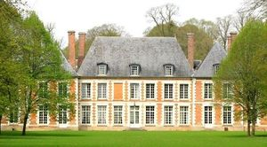
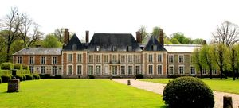

Recensement Jean-Claude Truffet
| Département | 80 — Somme |
| Canton | Flixecourt |
| Commune | Ribeaucourt |
| Type d'édifice | Château |
| Période d'origine | XVII |
| Coordonnées GPS | 50° 07' 11,75" Nord, 2° 06' 58,71" Est |


RIBEAUCOURT , en 1613, Marie de Boubers hérite de son père la seigneurie de Ribeaucourt et s'y installe avec son époux Antoine Le Fournier, seigneur de Wargemont, terre que possède la famille Le Fournier depuis le XVe siècle, la maison seigneuriale se présente encore sous la forme d'un manoir ayant conservé certains caractères médiévaux, comme la basse-cour précédant le logis et la tour latérale qui servira de chapelle seigneuriale jusqu'à la Révolution. Les deux caves subsistant sous le château actuel (aile nord-est et corps de logis sud-ouest) correspondent à ce premier manoir, la première portant un graffiti avec la date de 1642. Le logis à deux niveaux et pignons, qui sera agrandi et modifié en 1678, a été construit pour Antoine Le Fournier de Wargemont dans les années 1620, en tous les cas avant l'année 1635 qui marque le début d'une période de troubles dans le Ponthieu, peu propice à des travaux de cette envergure. Le 4 avril 1678, François le Fournier, chevalier, seigneur de Wargemont, Ribeaucourt, Barlette, Graincourt et Méricourt, passe marché avec le maître charpentier amiénois François de Vaux, par l'intermédiaire de Dom Augustin de Saint-Joseph, prieur des Feuillants d'Amiens; en effet, le charpentier vient de réaliser le grand escalier du couvent, situé rue des Rabuissons à Amiens, et avec lequel la famille Le Fournier est très liée. On doit à François-Louis Le Fournier, marquis de Wargemont, maréchal de camp, des travaux considérables à Ribeaucourt dans le troisième quart du XVIIIe siècle, la façade du corps de logis principal comprend alors trois travées sur cour et sur jardin, et l'aile deux travées. Après ces travaux, le plan du logis doit être relativement simple et symétrique, le vestibule central desservant de part et d'autre une grande salle éclairée par une fenêtre sur la cour et une sur le jardin, suivie d'une chambre éclairée par deux fenêtres sur le jardin. Des pièces de service et de commodité complétaient ces deux appartements côté cour. L'aménagement de la basse-cour à l'est et la construction des communs et dépendances ont dû s'étaler entre la fin du XVIIe et le milieu du XVIIIe siècle.
RIBEAUCOURT, François-Louis Le Fournier de Wargemont laisse une succession obérée et ses domaines fonciers, mis en adjudication le 23 avril 1774, sont acquis par son frère Aymar Le Fournier, comte de Wargemont. Mais de longues procédures vont l'opposer jusqu'à la Révolution aux enfants et héritiers de son frère. Ribeaucourt et acquis par un négociant d'Abbeville. L'ensemble est recouvré en 1803 par Bonne Charlotte Le Fournier de Wargemont, marquise de Persan qui le cède à son tour en 1821, avec la forêt de Goyaval et les terres de Barlette, au négociant amiénois Pierre-Louis Degove et à son gendre Jean-Charles Deberny devenu seul propriétaire du château à la suite du décès de son beau-père, la commande du doublement du nombre des baies des façades du corps de logis principal, qui passent ainsi de trois à sept travées. On doit à Charles-Philippe de Berny, ces travaux concernent la construction d'un corps de logis en prolongement du logis à l'ouest, Ce bâtiment est presque symétrique à l'aile des cuisines, qui est alors surélevée d'un étage carré. À la fin du XIXe ou au tout début du XXe siècle ce qui permet de régulariser la limite du parc dans la continuité de la perspective plantée. En 1928, Gérard de Berny, dernier représentant de la lignée, hérite de l'ensemble du patrimoine familial. Sénateur de la Somme et maire de Ribeaucourt, il est surtout connu comme bibliophile et amateur d'art et lègue à sa mort la demeure amiénoise de la famille à la ville d'Amiens pour en faire un musée d'histoire régionale (actuel musée de l'hôtel de Berny). À Ribeaucourt, il fait construire dans les années 1930 le portail en brique et pierre qui marque sur la place publique l'entrée de la rue du Château, qui a été occupé de 1940 à 1944 par l'armée allemande, qui installe des rampes de lancement de V1 et de V2 dans le bois.
Famille Le Fournier"
Château de Ribeaucourt. GPS : 50° 07' 11,75" Nord, 2° 06' 58,71" Est